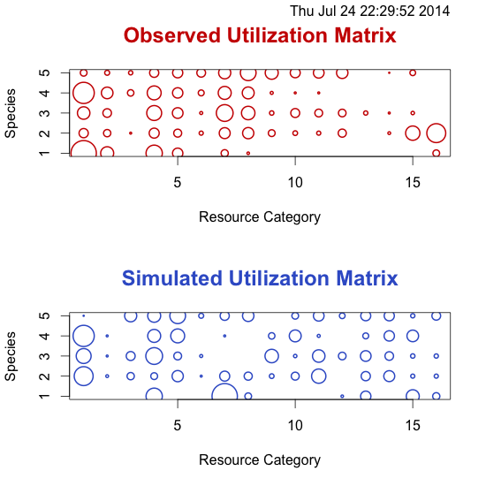
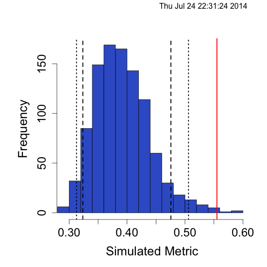
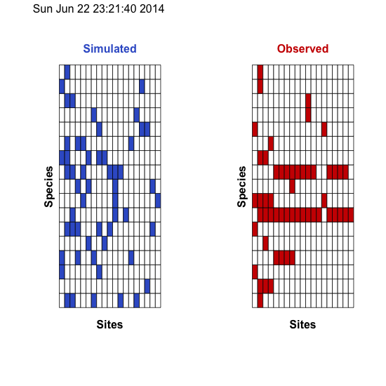
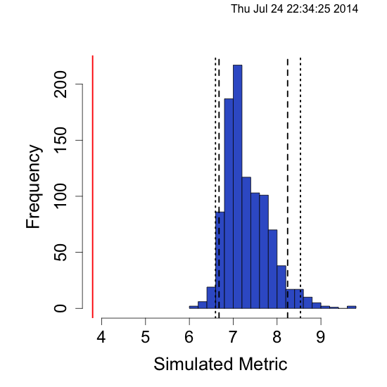
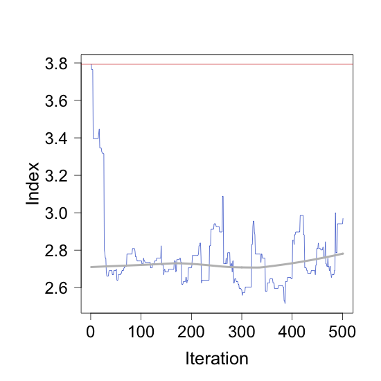
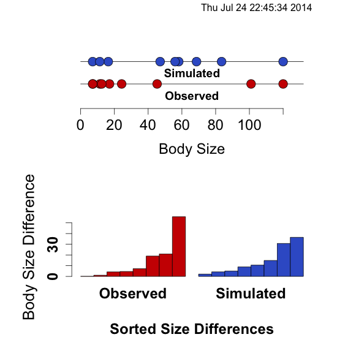
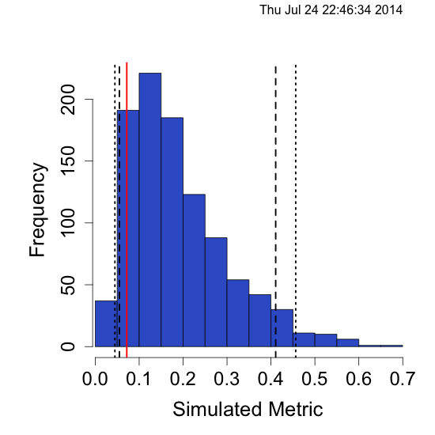

Repository for EcoSimR, by Gotelli, N.J. and A.M. Ellison. 2013. EcoSimR 0.1.0 http://www.uvm.edu/~ngotelli/EcoSim/EcoSim.html
First install the dev branch
library(devtools)
## use dev_mode() if you want to just play with this in a sandbox
install_github("EcoSimR","gotellilab",ref="dev")
Currently null models can be run on niche data, co-occurrence data, and size ratio data
Niche null models
library(EcoSimR)
warbMod <- niche_null_model(macwarb)
summary(warbMod)
plot(warbMod,type="niche")
plot(warbMod, type="hist")
Time Stamp: Thu Jul 24 22:29:52 2014
Random Number Seed: -418884223
Number of Replications: 1000
Elapsed Time: 0.46 secs
Metric: pianka
Algorithm: ra3
Observed Index: 0.55514
Mean Of Simulated Index: 0.39145
Variance Of Simulated Index: 0.0022785
Lower 95% (1-tail): 0.32365
Upper 95% (1-tail): 0.47571
Lower 95% (2-tail): 0.31274
Upper 95% (2-tail): 0.50608
P(Obs <= null) = 0.997
P(Obs >= null) = 0.003
P(Obs = null) = 0
Standardized Effect Size (SES): 3.4293
Niche plots

Histogram

Co-Occurrence Null Models
finchMod <- cooc_null_model(wiFinches, algo="sim3")
summary(finchMod)
plot(finchMod, typ="cooc")
plot(finchMod, type="hist")
Time Stamp: Thu Jul 24 22:42:17 2014
Random Number Seed: 1969414287
Number of Replications: 1000
Elapsed Time: 2.7 secs
Metric: c_score
Algorithm: sim3
Observed Index: 3.7941
Mean Of Simulated Index: 7.2588
Variance Of Simulated Index: 0.25058
Lower 95% (1-tail): 6.6324
Upper 95% (1-tail): 8.1905
Lower 95% (2-tail): 6.5294
Upper 95% (2-tail): 8.3912
P(Obs <= null) = 0
P(Obs >= null) = 1
P(Obs = null) = 0
Standardized Effect Size (SES): -6.9214
Sample of shuffled matrix

Histogram

Also when we run with the simFast algorithm we can get a burn in plot
finchMod <- cooc_null_model(wiFinches, algo="simFast",burnin=500)
plot(finchMod,type="burnin")

Size Ratio null models
Lastly we can run null models on size ratios, and produce two different kinds of plots
rodentMod <- size_null_model(rodents)
summary(rodentMod)
plot(rodentMode,type="size")
plot(rodentMode,type="hist")
Time Stamp: Thu Jul 24 22:45:34 2014
Random Number Seed: -438432393
Number of Replications: 1000
Elapsed Time: 0.15 secs
Metric: var_ratio
Algorithm: uniform_size
Observed Index: 0.071826
Mean Of Simulated Index: 0.18809
Variance Of Simulated Index: 0.012434
Lower 95% (1-tail): 0.055043
Upper 95% (1-tail): 0.41076
Lower 95% (2-tail): 0.044767
Upper 95% (2-tail): 0.45634
P(Obs <= null) = 0.097
P(Obs >= null) = 0.903
P(Obs = null) = 0
Standardized Effect Size (SES): -1.0427
Size null model

Histogram

These functions are used in index.r to configure various
settings that staticdocs uses when rendering a package. This is
particularly useful for generating an index page that groups functions
into useful categories
c_scorec_score_skewc_score_varcheckercooc_null_modelczekanowskiczekanowski_skewczekanowski_varEcoSimR(EcoSimR-package)gamma_sizemacwarbmin_diffmin_rationiche_null_modelnull_model_enginepiankapianka_skewpianka_varplot.coocnullmodplot.nichenullmodra1ra2ra3ra4ranMatGenrodentssim1sim10sim2sim3sim4sim5sim6sim7sim8sim9.fastsim9.singlesize_null_modelsource_pool_drawspecies_combosummary.coocnullmodsummary.nichenullmodsummary.sizenullmoduniform_sizeuniform_size_userv_ratiovar_diffvar_ratiovector_sampleVectorSamplewiFinches